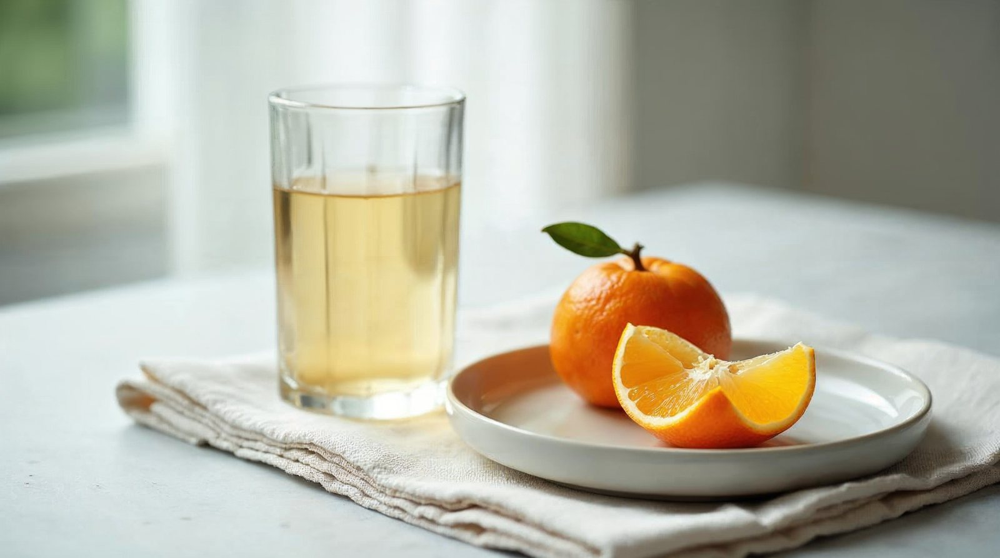
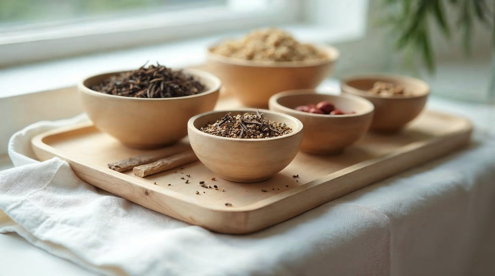
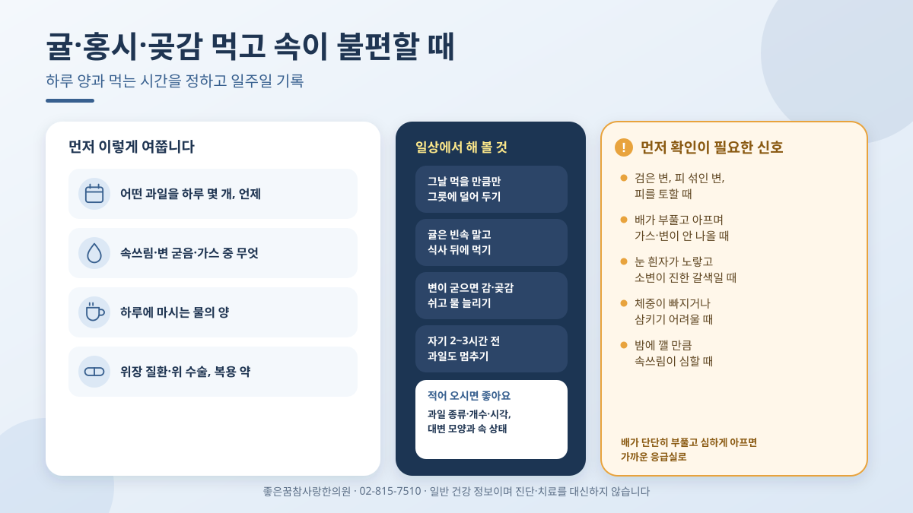

이종호 한의사 감수좋은꿈참사랑한의원 대표원장 (한의사 면허번호 19769)발행 2026-11-25 · 수정 2026-11-25
이 글의 차례
겨울이 되면 집집마다 귤 상자가 놓이고, 시골에서 홍시와 곶감을 보내오거나 연말 선물로 과일 상자를 받는 일이 많습니다. 과일은 몸에 좋다는 생각에 TV를 보며 하나둘 까먹다 보면 하루에 귤 열 개, 곶감 서너 개를 훌쩍 넘기기도 합니다.
그 뒤 저녁마다 명치가 쓰리거나, 며칠째 변이 딱딱하게 굳거나, 배가 빵빵하게 부풀어 가스가 자주 나온다면 과일의 종류와 양, 먹는 시간을 먼저 살펴볼 만합니다. 대체로 귤처럼 신맛이 강한 과일은 빈속에 많이 먹을 때 속쓰림과 신물로, 감과 곶감은 변이 굳는 쪽으로, 어떤 과일이든 한 번에 많이 먹으면 가스와 더부룩함으로 드러나는 경우가 많습니다.
하루 먹을 양을 그릇에 덜어 두고, 빈속보다 식사 뒤에 먹으며, 과일별로 어떤 불편이 따라오는지 일주일만 기록해 보세요. 다만 검은 변이나 피가 섞인 변, 심한 복통과 구토, 눈 흰자가 노랗게 보이는 변화가 있다면 과일 조절보다 진료가 먼저입니다.
왜 겨울 과일을 자주 먹으면 속과 변이 달라질까요
- 귤에는 구연산 같은 산 성분이 들어 있어, 위가 예민하거나 위산이 식도로 잘 올라오는 분이 빈속에 여러 개를 먹으면 명치가 쓰리고 신물이 올라오는 느낌이 들 수 있습니다.
- 귤 알맹이를 감싼 하얀 속껍질과 실 같은 부분에는 식이섬유가 많습니다. 적당하면 배변에 도움이 되지만, 평소보다 갑자기 많이 먹으면 장에서 발효되며 가스가 차고 배가 부글거릴 수 있습니다.
- 과일에 든 과당은 한 번에 많이 들어오면 장에서 다 흡수되지 못하고 남아, 사람에 따라 가스와 묽은 변을 만들기도 합니다.
- 감, 특히 떫은맛이 남은 감과 곶감에는 탄닌 성분이 있어 장의 움직임을 더디게 하고 변을 단단하게 만드는 쪽으로 작용할 수 있습니다. 겨울에는 물을 덜 마시고 덜 움직여 이 영향이 더 크게 느껴지기 쉽습니다.
- 곶감은 말리는 과정에서 수분이 빠져 같은 크기라도 당과 열량이 진하게 모여 있습니다. 한두 개가 생과일 여러 개 분량에 가까워 혈당과 체중에도 영향을 줄 수 있습니다.
- 연말에는 과일과 함께 떡, 한과, 과자 같은 선물 간식이 겹쳐 하루 전체 간식량이 크게 늘기 쉽습니다. 저녁 식사 뒤 과일까지 더하면 위에 머무는 양이 많아져 밤에 더부룩하고 신물이 오르기 쉽습니다.
- 드물지만 위 수술을 받은 적이 있거나 위의 움직임이 느린 분이 빈속에 감을 많이 먹으면 위 속에서 덩어리가 뭉치는 일이 보고되어 있어 주의가 필요합니다.
- 귤을 하루 여러 개씩 몇 주 동안 먹으면 손바닥과 발바닥이 노랗게 보이는 경우가 있습니다. 귤의 색소가 피부에 쌓인 것으로, 눈 흰자는 하얗게 남아 있다는 점에서 황달과 구분해 봅니다.
- 한의학에서는 감을 성질이 서늘한 과일로 보아 속이 찬 분이 많이 먹으면 배가 차고 불편할 수 있다고 설명하기도 하고, 귤은 따뜻한 성질로 보며 껍질을 말린 것은 진피라는 이름의 약재로 쓰기도 합니다. 같은 과일이라도 사람의 체질과 그날의 속 상태에 따라 받아들이는 정도가 다르다고 봅니다.
먼저 이렇게 여쭙니다
- 어떤 과일을 하루에 몇 개쯤, 언제 드시는지 여쭙니다. 아침 빈속인지, 식사 직후인지, 밤늦게 TV를 보며 드시는지도 함께 여쭙니다.
- 속쓰림, 변이 굳는 것, 가스, 묽은 변 가운데 어떤 불편이 가장 큰지, 과일을 먹고 몇 시간 뒤에 나타나는지 여쭙니다.
- 대변을 며칠에 한 번 보시는지, 모양과 굳기가 어떻게 달라졌는지 여쭙니다.
- 하루에 마시는 물의 양과, 겨울 들어 줄어든 활동이 있는지 여쭙니다.
- 평소 위염이나 역류성 식도염, 과민성 장 증상이 있었는지, 위 수술을 받은 적이 있는지 여쭙니다.
- 당뇨나 혈당 문제로 관리 중인지, 복용 중인 약(특히 진통제, 철분제, 위장약)이 있는지 여쭙니다.
- 과일을 베란다나 냉장고에 두었다가 차가운 채로 바로 드시는지 여쭙니다. 속이 찬 분은 같은 과일도 차게 먹을 때 더 불편해하는 경우가 있습니다.
- 손바닥 색이 달라졌다면 눈 흰자와 소변 색은 어떤지 여쭙니다.

일상에서 먼저 해 볼 수 있는 것
하루 양을 먼저 정하기
- 과일 상자를 거실 탁자나 TV 옆에 두지 말고 베란다나 부엌 한쪽에 둡니다. 손이 닿는 곳에 있으면 생각보다 많이 먹게 됩니다.
- 아침에 그날 먹을 만큼만 작은 그릇에 덜어 둡니다. 귤은 중간 크기 두세 개, 단감이나 홍시는 한 개, 곶감은 한두 개 정도를 하루 안에서 나눠 먹는 범위로 잡아 보고, 불편이 있으면 그보다 줄입니다.
- 여러 과일을 함께 먹는 날에는 종류를 합쳐서 양을 셉니다. 귤 세 개에 곶감 두 개를 더하면 하루 간식으로는 꽤 많은 양입니다.
- 상자 속 귤은 며칠에 한 번 뒤적여 무르거나 곰팡이가 핀 것을 골라냅니다. 곰팡이가 핀 귤은 먹지 않고, 바로 옆에 닿아 있던 귤도 무른 곳이 없는지 살펴봅니다.
먹는 시간 바꾸기
- 속쓰림이 있다면 빈속에 귤을 먹지 말고 식사 뒤 30분쯤 지나 디저트로 먹습니다.
- 잠들기 두세 시간 전부터는 과일도 먹지 않습니다. 밤에 먹고 바로 누우면 신물이 올라오고 가스가 차기 쉽습니다.
- 홍시와 곶감은 아침 빈속보다 점심이나 오후 간식으로 먹고, 따뜻한 물이나 보리차를 함께 마십니다.
불편에 따라 조절하기
- 변이 굳는다면 감과 곶감을 며칠 쉬고, 물을 하루 1.5L 안팎으로 나눠 마시며, 채소와 해조류, 잡곡을 늘립니다. 아침 식사 뒤 정해진 시각에 화장실에 5분쯤 앉아 보는 습관을 만듭니다.
- 가스가 찬다면 한 번에 먹는 양을 절반으로 줄이고, 귤 속껍질을 조금 떼어 내며, 식후 10~15분 천천히 걷습니다.
- 변이 묽어진다면 귤과 배처럼 수분과 과당이 많은 과일을 하루 한두 개로 줄이고, 차가운 상태로 먹지 않습니다. 베란다에 둔 과일은 실내에 잠시 두었다가 먹습니다.
- 속이 쓰리다면 귤과 신 과일을 일주일쯤 쉬어 보고, 커피와 매운 음식, 술도 함께 줄입니다.
일주일 기록하기
- 과일 종류와 개수, 먹은 시각, 그날의 속 상태(쓰림, 가스, 더부룩함)와 대변 모양을 한 줄씩 적습니다.
- 일주일이 지나면 어떤 과일, 어떤 시간에 불편이 몰렸는지 표시해 봅니다. 하나씩 줄여 보며 달라지는지 확인하면 나에게 맞는 양을 찾기 쉽습니다.
상황별 예시
- 예를 들어 연말 선물로 귤 한 상자를 받아 저녁마다 TV를 보며 일고여덟 개씩 먹고, 밤 11시쯤 잠자리에 누우면 명치가 쓰리고 신물이 올라오는 경우, 귤을 저녁 식사 직후 두세 개로 줄이고 밤 9시 이후에는 먹지 않는 것부터 해 봅니다.
- 예를 들어 시골 부모님 댁에서 보내 주신 곶감을 매일 오후 간식으로 서너 개씩 먹으면서 물은 하루 두세 잔밖에 마시지 않고, 변을 사나흘에 한 번 딱딱하게 보게 된 경우, 곶감을 며칠 쉬고 물을 나눠 마시며 아침 식사 뒤 화장실에 앉는 시간을 정해 봅니다.
- 예를 들어 아침을 거르고 출근길에 홍시 두 개로 끼니를 대신하다가 오전 내내 명치가 묵직하고 더부룩한 경우, 홍시는 식사 뒤로 옮기고 아침에는 밥이나 달걀처럼 든든한 것을 조금이라도 먹어 봅니다.
- 예를 들어 귤을 하루 열 개 가까이 몇 주째 먹다가 손바닥이 노랗게 보여 놀란 경우, 밝은 곳에서 눈 흰자가 하얀지, 소변 색이 진하지 않은지 먼저 확인합니다. 눈 흰자는 하얗고 다른 불편이 없다면 귤을 줄이고 몇 주 지켜보지만, 눈 흰자까지 노랗거나 소변이 진한 갈색이면 바로 진료를 받습니다.
- 예를 들어 틀니를 쓰시는 어르신이 씹기 편하다며 홍시를 하루 서너 개씩 드시고 물은 적게 드시다가 변을 며칠씩 못 보시는 경우, 홍시를 하루 한 개로 줄이고 따뜻한 물을 자주 드시도록 챙깁니다. 배가 단단하게 부풀고 아파하시거나 토하시면 기다리지 말고 진료를 받습니다.
자주 하는 오해
- 과일은 몸에 좋으니 많이 먹을수록 좋다고 여기기 쉽지만, 과일도 당과 열량이 있고 사람마다 속이 받아들이는 양이 다릅니다.
- 변비에는 과일이 다 도움이 된다고 생각하는 분도 있는데, 감과 곶감처럼 오히려 변을 굳게 만들 수 있는 과일도 있습니다.
- 귤은 신맛이 나니 늘 위에 해롭다고 걱정하는 분도 있습니다. 속이 편한 분이 식사 뒤 적당히 먹는 것은 대개 부담이 크지 않고, 문제는 빈속과 많은 양이 겹칠 때인 경우가 많습니다.
- 손바닥이 노래지면 간이 나빠졌다고 바로 걱정하기 쉽지만, 귤을 많이 먹어 생긴 색 변화는 눈 흰자가 하얗게 남는다는 점이 다릅니다. 눈 흰자까지 노랗다면 이야기가 달라지니 진료를 받습니다.
- 곶감은 말린 과일이라 양이 적어 보여 가볍게 여기기 쉽지만, 수분이 빠진 만큼 당이 진하게 모여 있어 개수를 세어 먹는 편이 좋습니다.
스스로 점검해 보세요
- 과일 상자를 손 닿는 곳에 두고, 하루에 몇 개 먹는지 세어 본 적이 없다.
- 귤을 아침 빈속이나 잠들기 직전에 먹는 날이 많다.
- 감이나 곶감을 먹기 시작한 뒤로 변이 굳거나 배변 간격이 길어졌다.
- 과일을 많이 먹은 날 저녁에 배가 빵빵하고 가스가 잦다.
- 겨울 들어 물을 하루 서너 잔도 마시지 않는 날이 많다.
- 원래 속쓰림이나 역류 증상이 있는 편이다.
- 베란다나 냉장고에서 꺼낸 찬 과일을 그대로 먹는 편이다.
- 손바닥이 노래졌는데 눈 흰자 색은 확인해 보지 않았다.

한의원에서 함께 살필 수 있는 경우
- 과일 양을 줄였는데도 속쓰림, 더부룩함, 가스가 2주 넘게 이어지는 경우
- 겨울만 되면 변이 굳고 배가 차며, 찬 음식을 먹으면 속이 불편해지는 경우
- 먹는 것에 따라 변비와 묽은 변이 번갈아 나타나 어떤 음식이 맞는지 정리하고 싶은 경우
- 혈당 관리 중인데 겨울 간식을 어떻게 조절할지 함께 정하고 싶은 경우
좋은꿈참사랑한의원에서는 첫 방문 때 어떤 과일을 언제, 얼마나 드셨는지와 불편이 시작된 시기, 대변의 모양과 간격을 먼저 여쭙고, 평소 식사와 물, 잠, 복용 중인 약도 함께 정리합니다. 그다음 맥부터 짚어 보고, 혀의 색과 설태, 배를 눌렀을 때 단단하거나 차가운 곳이 있는지 살펴 속이 찬 편인지, 먹은 것이 오래 머무는 편인지 확인합니다.
혈당 관리가 필요하다면 당화혈색소 검사기나 혈액 검사기로 지금 상태를 함께 보기도 합니다. 검사 가능한 항목은 방문 전 전화로 확인해 주세요. 그 뒤 과일 종류와 양, 먹는 시간을 어떻게 조절할지 함께 정하고, 필요하면 침이나 뜸, 한약을 상의합니다. 검은 변이나 체중 감소처럼 내시경 같은 검사가 먼저 필요해 보이면 그렇게 안내해 드립니다.
다음 진료에서는 기록해 오신 일주일 식사와 대변 변화를 이어서 보며 조절 방향을 다듬습니다.
얼마나 지켜보고 언제 상담할까요
- 과일 양과 먹는 시간을 바꾼 뒤 1~2주 동안 속 상태와 대변을 기록하며, 원인으로 보이는 과일을 줄였을 때 며칠 사이 달라지는지 살펴봅니다.
- 손바닥이 노래진 경우 귤을 줄이면 대개 몇 주에 걸쳐 천천히 옅어집니다. 그동안 눈 흰자가 하얗게 유지되는지 계속 확인합니다.
- 2주가 지나도 속쓰림이나 변비가 그대로이거나, 과일과 상관없이 불편이 이어지면 다른 원인이 없는지 상담을 받아 보세요.
- 아래 신호가 있으면 기다리지 말고 진료를 받습니다.
이렇게 기록해 오시면 상담이 쉬워집니다
- 일주일 동안 먹은 과일의 종류와 개수, 먹은 시각
- 속쓰림, 가스, 더부룩함이 나타난 시각과 정도
- 대변을 본 날짜와 모양(딱딱함, 보통, 묽음)
- 하루에 마신 물의 양과 걷는 시간
- 평소 위장 질환이나 위 수술 경험, 복용 중인 약과 영양제
- 손바닥 색이 달라졌다면 밝은 곳에서 찍은 손바닥과 눈 사진
이런 증상은 먼저 확인이 필요합니다
- 검은 변이나 피가 섞인 변을 보거나, 피를 토하거나 커피 찌꺼기 같은 것을 토하는 경우
- 배가 심하게 아프고 부풀어 오르면서 구토가 나고, 가스와 변이 전혀 나오지 않는 경우
이런 신호가 있으면 한의원보다 가까운 병원이나 응급실을 먼저 찾으세요.
관련 글
- 연말에 귤과 떡, 과자를 자꾸 집어 먹게 될 때 혈당이 걱정되면 어떻게 살피나요?
- 트림과 가스가 자주 차고 배가 빵빵할 때는 어떤 점을 살펴보나요?
- 어르신이 겨울에 변이 굳고 며칠씩 보지 못할 때는 어떻게 살피나요?

여쭙는 것
- 어떤 과일을 하루에 몇 개쯤, 언제 드시는지 여쭙니다. 아침 빈속인지, 식사 직후인…
- 속쓰림, 변이 굳는 것, 가스, 묽은 변 가운데 어떤 불편이 가장 큰지, 과일을 먹…
- 대변을 며칠에 한 번 보시는지, 모양과 굳기가 어떻게 달라졌는지 여쭙니다.
생활에서 해 볼 것
- 과일 상자를 거실 탁자나 TV 옆에 두지 말고 베란다나 부엌 한쪽에 둡니다. 손이…
- 아침에 그날 먹을 만큼만 작은 그릇에 덜어 둡니다. 귤은 중간 크기 두세 개, 단감…
- 여러 과일을 함께 먹는 날에는 종류를 합쳐서 양을 셉니다. 귤 세 개에 곶감 두 개…
한의원에서 함께 살필 것
- 과일 양을 줄였는데도 속쓰림, 더부룩함, 가스가 2주 넘게 이어지는 경우
- 겨울만 되면 변이 굳고 배가 차며, 찬 음식을 먹으면 속이 불편해지는 경우
- 먹는 것에 따라 변비와 묽은 변이 번갈아 나타나 어떤 음식이 맞는지 정리하고 싶은 경우
먼저 확인이 필요한 신호
- 검은 변이나 피가 섞인 변을 보거나, 피를 토하거나 커피 찌꺼기 같은 것을 토하는 경우
- 배가 심하게 아프고 부풀어 오르면서 구토가 나고, 가스와 변이 전혀 나오지 않는 경우
한눈에 보는 표
| 구분 | 핵심 |
|---|---|
| 여쭙는 것 | 어떤 과일을 하루에 몇 개쯤, 언제 드시는지 여쭙니다. 아침 빈속인지, 식사 직후인지, 밤늦게 TV를 보며 드시는지도 함께 여쭙니다. 속쓰림, 변이 굳는 것, 가스, 묽은 변 가운데 어떤 불편이 가장 큰지, 과일을 먹고 몇 시간 뒤에 나타나는지 여쭙니다. |
| 생활에서 해 볼 것 | 과일 상자를 거실 탁자나 TV 옆에 두지 말고 베란다나 부엌 한쪽에 둡니다. 손이 닿는 곳에 있으면 생각보다 많이 먹게 됩니다. 아침에 그날 먹을 만큼만 작은 그릇에 덜어 둡니다. 귤은 중간 크기 두세 개, 단감이나 홍시는 한 개, 곶감은 한두 개 정도를 하루 안에서 나눠 먹는 범위로 잡아 보고, 불편이 있으면 그보다 줄입니다. |
| 한의원에서 함께 살필 것 | 과일 양을 줄였는데도 속쓰림, 더부룩함, 가스가 2주 넘게 이어지는 경우 겨울만 되면 변이 굳고 배가 차며, 찬 음식을 먹으면 속이 불편해지는 경우 |
| 먼저 확인이 필요한 신호 | 검은 변이나 피가 섞인 변을 보거나, 피를 토하거나 커피 찌꺼기 같은 것을 토하는 경우 배가 심하게 아프고 부풀어 오르면서 구토가 나고, 가스와 변이 전혀 나오지 않는 경우 |
자주 묻는 질문
귤은 하루에 몇 개까지 먹어도 괜찮나요?
정해진 숫자가 있는 것은 아니고 사람마다 속이 받아들이는 양이 다릅니다. 보통 중간 크기 두세 개를 식사 뒤에 나눠 먹는 정도에서 시작해 보고, 속쓰림이나 가스가 있으면 그보다 줄여 보세요.
곶감을 먹으면 변비가 생긴다는 말이 맞나요?
곶감과 떫은 감에 든 탄닌 성분은 변을 단단하게 만드는 쪽으로 작용할 수 있어, 물을 적게 마시고 덜 움직이는 겨울에는 변이 굳는 분이 있습니다. 변이 굳는다면 며칠 쉬어 보고 물과 채소를 늘려 보세요.
손바닥이 노래졌는데 병원에 가야 하나요?
눈 흰자가 하얗고 소변 색이 보통이며 다른 불편이 없다면, 귤을 줄이고 몇 주 지켜볼 수 있습니다. 눈 흰자까지 노랗거나 소변이 진한 갈색이고 피로와 가려움이 함께 있다면 바로 진료를 받으세요.
위염이 있는데 귤을 아예 먹지 말아야 하나요?
증상이 심할 때는 신 과일을 잠시 쉬는 것이 편할 수 있습니다. 속이 가라앉은 뒤에는 식사 뒤에 한두 개씩 먹어 보며 반응을 확인하고, 담당 의사가 따로 제한을 권했다면 그 안내를 먼저 따르세요.
한의원에서는 이런 속 불편을 어떻게 살피나요?
어떤 과일을 언제, 얼마나 드셨는지와 대변, 물, 잠을 함께 여쭙고 맥부터 짚어 봅니다. 혀와 배를 살펴 속이 찬 편인지, 먹은 것이 오래 머무는 편인지 확인한 뒤 먹는 양과 시간을 함께 정합니다.
좋은꿈참사랑한의원은 재진 때 지난번 이야기부터 이어서 여쭙니다. 진료시간과 예약은 오시는 길에서 확인하세요.
어디서 상담받을 수 있나요?
좋은꿈참사랑한의원은 서울 동작구 만양로2길 2 신성빌딩 3층·5층(서울 동작구 상도동, 7호선 상도역 3번 출구 근처)에 있습니다. 한의사 3명(이종호 대표원장, 조영기 수석진료원장, 정원영 진료원장)이 진료합니다. 진료시간은 평일 09:30~20:00(점심 13:00~14:00), 토·일·공휴일 09:30~15:00이며, 방문 전 전화로 확인을 권합니다. 예약은 네이버 예약, 카카오톡 상담, 전화 02-815-7510로 받습니다.
이 글은 일반적인 건강 정보이며 개인의 진단이나 치료를 대신하지 않습니다. 증상이 있거나 복용 중인 약이 있다면 진료를 통해 확인하세요. 치료 효과는 개인마다 다를 수 있습니다.
작성 기준: 일반적으로 알려져 있는 건강 정보를 참고해 정리했습니다(대표원장 감수). 증상 기록은 1~2주 동안 하루 1회, 비슷한 시간에 적어 오시면 지난 상태와 비교하기 쉽습니다.